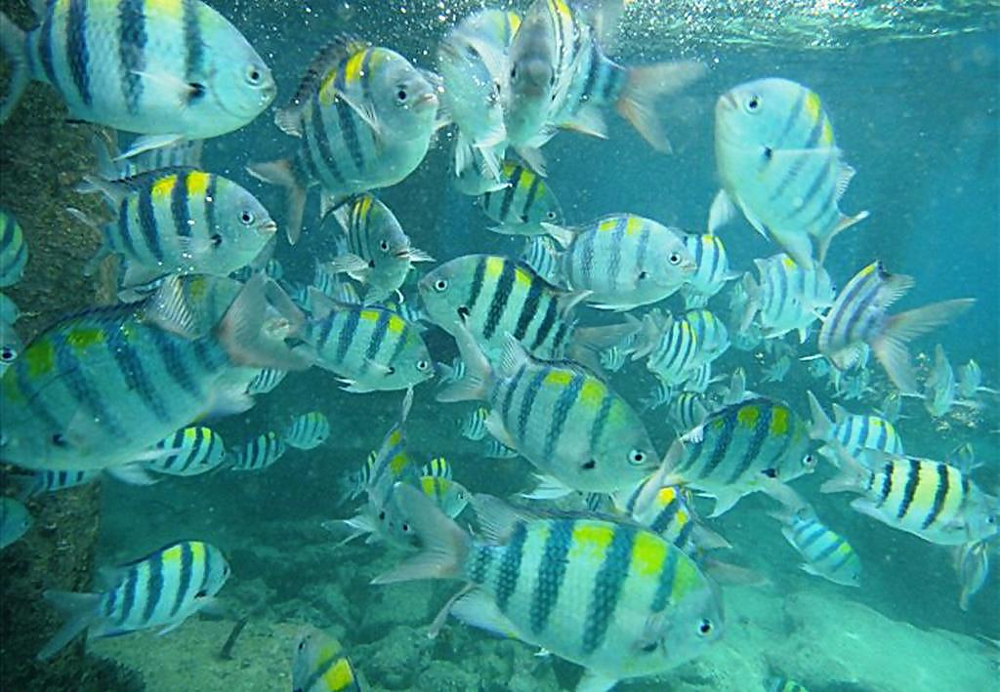
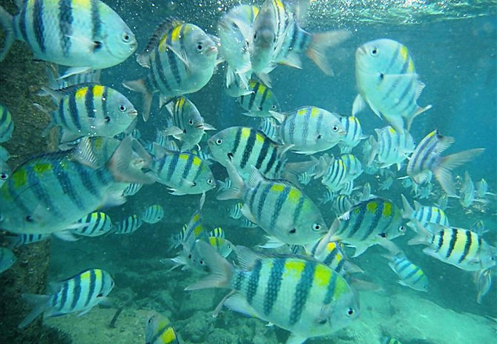

A Wavelet-based Dual-stream Network for Underwater Image Enhancement
Ziyin Ma and Changjae Oh
School of Electrical Engineering and Computer Science, Queen Mary University of London, UK
Abstract
We present a wavelet-based dual-stream network that addresses color cast and blur in underwater images. We handle these artifacts separately by decomposing an input image into frequency bands using discrete wavelet transform, which generates the downsampled structure image and detail images. These sub-band images are used as input to our dual-stream network that incorporates two sub-networks, multi-color space fusion network and detail enhancement network. The multi-color space network takes the decomposed structure image as input and estimates the color corrected output by employing the feature representations from diverse color spaces of the input. The detail enhancement network addresses the blurriness of the original underwater image by improving the image details from high-frequency sub-bands. We validate the proposed model on both real-world dataset and synthetic underwater datasets and show the effectiveness of the proposed method in color correction and blur removal with low computation.
Visual comparison
 



References
| Name | Title | Year | Author | Paper |
|---|---|---|---|---|
| ULAP | A rapid scene depth estimation model based on underwater light attenuation prior for underwater image restoration | 2018 | W. Song et al. | [Paper] |
| IBLA | Underwater image restoration based on image blurriness and light absorption | 2017 | Y.T. Peng, P.C. Cosman | [Paper] |
| UDCP | Transmission estimation in underwater single images | 2013 | P. Drews et al. | [Paper] |
| UWCNN | Underwater scene prior inspired deep underwater image and video enhancement | 2020 | G. Hou et al. | [Paper] |
| WaterNet | Deep underwater image enhancement | 2018 | C. Li et al. | [Paper] |
| UIE-DAL | All-in-one underwater image enhancement using domain-adversarial learning | 2019 | P.M. Uplavikar et al. | [Paper] |